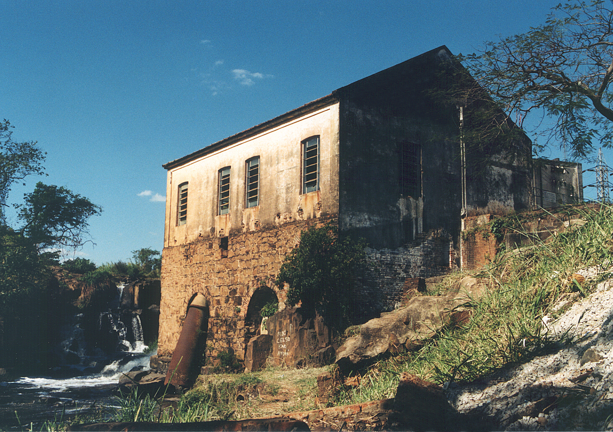

Por que está faltando água em Piracicaba?
A resposta não começa e termina no rio. Este episódio acompanha o caminho da água (da captação até a torneira) para entender consumo, crescimento urbano, perdas e a infraestrutura que sustenta o abastecimento.
Entenda o caminho da água↓Entre o rio e a sua casa existe uma cidade inteira.
Hoje, Piracicaba utiliza os rios Piracicaba e Corumbataí como mananciais. Segundo o Semae, o rio Corumbataí responde por mais de 80% do abastecimento da cidade. Fonte oficial ↗︎
Antes do Museu da Água, ali começou a água encanada de Piracicaba.
Em 1887, a primeira estação de captação e bombeamento levou água do rio Piracicaba até o centro da cidade. O chafariz da praça da Catedral marcou a chegada do abastecimento encanado.
Com o crescimento da cidade, o sistema mudou: veio o Semae, o Cantareira alterou o contexto regional e, nos anos 1980, Piracicaba passou a captar também no rio Corumbataí, que hoje responde por mais de 80% do abastecimento. A antiga estação virou Museu da Água em 2000.
Será que está faltando água porque cada casa está consumindo cada vez mais?
Não. Os dados históricos apontam para o contrário: o consumo médio residencial por economia caiu entre 1997 e 2021.
199718,4m³ / economia / mês
202111,6m³ / economia / mês
−36,9% no consumo médio residencial por economia.
Consumo médio residencial1997–2021 · m³/economia/mês
Calculado a partir das séries oficiais de consumo residencial e economias atendidas. Fonte oficial
O número de residências mais que dobrou, enquanto a rede cresceu só pela metade.
Crescimento comparadoÍndice 1997 = 100
ResidênciasRede
Séries oficiais de residências atendidas e extensão da rede de água, de 1997 a 2021. Fonte oficial
Em 2022, foram produzidos
70,7 bilhões de litrosno sistema de abastecimento de Piracicaba.
Participação das ETAs na produção
Fonte: PMSB 2026 · produção de água tratada em 2022. Fonte oficial
Apesar do volume produzido, o maior gargalo está no índice de perdas da distribuição.
+42,7% acima da média nacional no índice de perdas.
Experimente
Se o sistema movimentasse 7 toneladas de água...
Com o índice de 2022, a equivalência matemática seria:
Associado às perdas3,8 t
Restante após as perdas3,2 t
“Perda” não quer dizer que toda essa água vazou. O indicador inclui perdas reais, como vazamentos, e perdas aparentes/comerciais, como problemas de medição.
Fonte: SNIS reproduzido no PMSB 2026. Fonte oficial
O plano prevê substituir mais da metade da rede de água.
Rede de referência ~1.727 km869 km previstos
≈ 50,3%da extensão de referência
O PMSB prevê a troca de cerca de 869 km de redes de distribuição até 2055, priorizando trechos com materiais obsoletos ou historicamente problemáticos.
O problema aparece na prática
Nem toda interrupção tem a mesma causa.
Chuva intensa
O Semae reduziu temporariamente a captação no Rio Piracicaba por aumento de turbidez após chuvas fortes.
Fonte ↗︎Rompimento
Reparo emergencial em adutora no Jaraguá afetou temporariamente o abastecimento de cinco bairros.
Fonte ↗︎Oxidação e vazamentos
Trecho de 25 m de uma adutora de 500 mm precisou ser substituído por apresentar oxidação avançada e vazamentos.
Fonte ↗︎Um ponto importante
Isso não significa que nada esteja sendo feito.
Em 2026, a ETA Capim Fino foi ampliada de 1.500 para até 2.000 L/s e novas adutoras foram entregues. Há também obras de substituição de redes e setorização. A história que os dados contam não é “ausência de investimento”, e sim a existência de um passivo e de gargalos que exigem modernização em grande escala.
Ver obras entregues em agosto de 2026 ↗︎Em resumo
O desafio de Piracicaba não está apenas em captar água.
Está também em fazê-la chegar.
1997–2021
1997–2021
2022
até 2055
Transparência
Os dados têm data. E as conclusões também.
Este site não pretende mostrar um painel em tempo real. Ele documenta a realidade coberta pelas fontes disponíveis e deixa explícito o período de cada indicador.